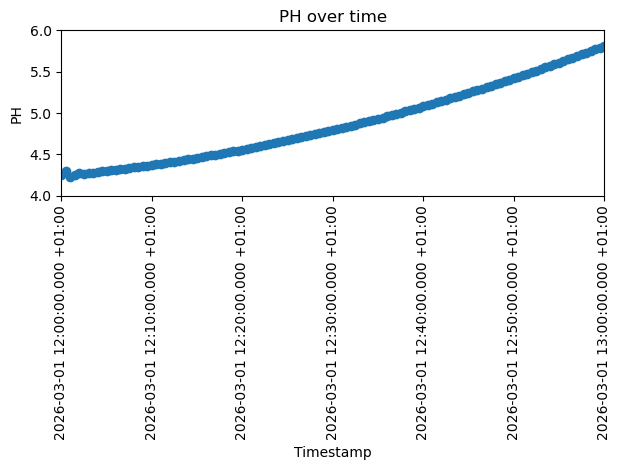
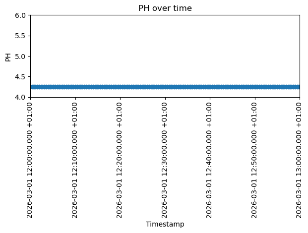

Tutorial 10: Calculation Settings
This tutorial demonstrates how to change the calculation type, time frame, thermal settings, and working directory. In addition the manual editing of the XML-Calculation file will be demonstrated. This allows to configure different calculations for one model and seperate them into different directories.
SIR 3S Installation
[1]:
SIR3S_SIRGRAF_DIR = r"C:\3S\SIR 3S\SirGraf-90-15-00-24_Quebec-Upd2" #change to local path
Imports
Note: The SIR 3S Toolkit requires the Sir3S_Toolkit.dll included in SIR 3S installations (version Quebec and higher).
[2]:
import sir3stoolkit
The core of sir3stoolkit is a Python wrapper around basic functionality of SIR 3S, offering a low-level access to the creation, modification and simulation of SIR 3S models. In the future pure python subpackages may be added.
[3]:
from sir3stoolkit.core import wrapper
[4]:
sir3stoolkit
[4]:
<module 'sir3stoolkit' from 'C:\\Users\\aUsername\\3S\\sir3stoolkit\\src\\sir3stoolkit\\__init__.py'>
The wrapper package has to be initialized with reference to a SIR 3S (SIR Graf) installation.
[5]:
wrapper.Initialize_Toolkit(SIR3S_SIRGRAF_DIR)
[2026-08-04 16:54:58,766] INFO in sir3stoolkit.core.wrapper: [Initialization] Using provided SirGraf path: C:\3S\SIR 3S\SirGraf-90-15-00-24_Quebec-Upd2
[2026-08-04 16:54:58,766] INFO in sir3stoolkit.core.wrapper: [Initialization] Using provided SirGraf path: C:\3S\SIR 3S\SirGraf-90-15-00-24_Quebec-Upd2
[2026-08-04 16:54:58,807] INFO in sir3stoolkit.core.wrapper: [Initialization] Initializing toolkit with SirGraf path: C:\3S\SIR 3S\SirGraf-90-15-00-24_Quebec-Upd2
Initialization
The SIR 3S Toolkit contains two classes: SIR3S_Model (model and data) and SIR3S_View (depiction in SIR Graf). All SIR 3S Toolkit functionality is accessed via the methods of these classes.
[6]:
s3s = wrapper.SIR3S_Model()
[2026-08-04 16:54:59,325] INFO in sir3stoolkit.core.wrapper: [Model Class Initialization] Initialization complete
Open Model
[7]:
s3s.OpenModel(dbName=r"Toolkit_Tutorial10_Model.db3",
providerType=s3s.ProviderTypes.SQLite,
Mid="M-1-0-1",
saveCurrentlyOpenModel=False,
namedInstance="",
userID="",
password="")
[2026-08-04 16:55:07,949] INFO in sir3stoolkit.core.wrapper: Model is open for further operation
Now the model has been opened. All SIR 3S Toolkit operations now apply to this model until another one is opened.
[8]:
print(s3s.GetNetworkType()) # to check that the correct model is responsive, model we are trying to open was created with type Water
NetworkType.Water
GetDBSourcePath()
We can use the method GetDBSourcePath() to retrieve basic information regarding the db file. We get a tuple of four strings as a return.
[60]:
(dbPath, connectionString, dbVendor, dbName) = s3s.GetDBSourcePath()
[61]:
dbPath
[61]:
'Toolkit_Tutorial10_Model.db3'
[62]:
connectionString
[62]:
'provider=System.Data.SQLite;data source="Toolkit_Tutorial10_Model.db3";version=3'
[63]:
dbVendor
[63]:
'SQLite'
[64]:
dbName
[64]:
'Toolkit_Tutorial10_Model'
GetWorkingDirectory()
The working directory of SIR 3S holds its calculation results.
We can use the method GetWorkingDirectory() to get the currently used working directory currently assigned to the model.
[9]:
working_directory_1 = s3s.GetWorkingDirectory()
[10]:
print(working_directory_1)
c:\Users\aUsername\3S\sir3stoolkit\docs\source\tutorials\SIR3S_Model\Tutorial010_Assets\WDToolkit_Tutorial10_Model_1
AllocateWorkingDirectory()
We can use the method AllocateWorkingDirectory() to change the working directory of the model to a different directory. The basic file structure needed to hold SIR 3S calculation results will be created automatically (if it does not exist already). This must be a valid, existing, writable and readable Directory Path.
[11]:
working_directory_2 = r"C:\Users\aUsername\3S\sir3stoolkit\docs\source\tutorials\SIR3S_Model\Tutorial010_Assets\WDToolkit_Tutorial10_Model_2"
[12]:
s3s.AllocateWorkingDirectory(strDirectory=working_directory_2)
[12]:
True
[13]:
print(s3s.GetWorkingDirectory())
c:\Users\aUsername\3S\sir3stoolkit\docs\source\tutorials\SIR3S_Model\Tutorial010_Assets\WDToolkit_Tutorial10_Model_2
CreateWorkingDirectory()
We can use the method CreateWorkingDirectory() to create a SIR 3S working directory and assign it to the currently open model via Toolkit. The param strDirectory is the parent dir, where the new working dir should be created. It will take the standard working dir name ‘WD{Model_Name}’.
[14]:
working_directory_new_parent = r"C:\Users\aUsername\3S\sir3stoolkit\docs\source\tutorials\SIR3S_Model\Tutorial010_Assets"
[15]:
s3s.CreateWorkingDirectory(strDirectory=working_directory_new_parent)
[15]:
True
[16]:
print(s3s.GetWorkingDirectory())
C:\Users\aUsername\3S\sir3stoolkit\docs\source\tutorials\SIR3S_Model\Tutorial010_Assets\WDToolkit_Tutorial10_Model
GetCalculationType()
We can use the method GetCalculationType() to check, what calculation type is currently set for a model.
[17]:
calculation_type = s3s.GetCalculationType()
[18]:
print(calculation_type)
LowFreq
SetCalculationType()
We can use the method SetCalculationType() to change between different calculation types. The types are saved in python enum, and have to be accessed via this enum.
[19]:
CalculationType = [item for item in dir(s3s.CalculationType) if not (item.startswith('__') and item.endswith('__'))]
print(CalculationType)
['HighFreq_AUTO', 'HighFreq_CHAR', 'Instat_FiniteDiff', 'LoopForLoadingCondition', 'LowFreq', 'Quasi_Stat', 'SteadyState', 'Unknown']
Not every calculation type is applicable to every network type (s3s.NetworkType). See main SIR 3S manual for details.
For Water and DH networks. Only SteadyState | Quasi_Stat | LowFreq | HighFreq_CHAR | HighFreq_AUTO | LoopForLoadingCondition are valid
For Gas/Steam Networks, only SteadyState | Quasi_Stat | HighFreq_CHAR | Instat_FiniteDiff | LoopForLoadingCondition are valid
Let’s set this model to “high-frequency automatic” calculations.
[20]:
s3s.SetCalculationType(s3s.CalculationType.HighFreq_AUTO)
[20]:
True
[21]:
print(s3s.GetCalculationType())
HighFreq_AUTO
Adjust stationary time stamp
[22]:
print(f"Current Stationary Timestamp: {s3s.GetValue(Tk=s3s.GetTksofElementType(s3s.ObjectTypes.GeneralSection)[0], propertyName='bz.Cdat')[0]}, {s3s.GetValue(Tk=s3s.GetTksofElementType(s3s.ObjectTypes.GeneralSection)[0], propertyName='bz.CUhr')[0]}")
Current Stationary Timestamp: 29.04.2026, 14:10:00
[23]:
s3s.SetValue(Tk=s3s.GetTksofElementType(s3s.ObjectTypes.GeneralSection)[0], propertyName="bz.Cdat", Value="01.03.2026")
[2026-08-04 16:55:09,183] INFO in sir3stoolkit.core.wrapper: Value is set
[24]:
s3s.SetValue(Tk=s3s.GetTksofElementType(s3s.ObjectTypes.GeneralSection)[0], propertyName="bz.CUhr", Value="12:00:00")
[2026-08-04 16:55:09,233] INFO in sir3stoolkit.core.wrapper: Value is set
[25]:
print(f"Adjusted Stationary Timestamp: {s3s.GetValue(Tk=s3s.GetTksofElementType(s3s.ObjectTypes.GeneralSection)[0], propertyName='bz.Cdat')[0]}, {s3s.GetValue(Tk=s3s.GetTksofElementType(s3s.ObjectTypes.GeneralSection)[0], propertyName='bz.CUhr')[0]}")
Adjusted Stationary Timestamp: 01.03.2026, 12:00:00
GetSimulationTimeFrame()
We can use the method GetSimulationTimeFrame() to check the time frame of the model.
[26]:
print(s3s.GetSimulationTimeFrame())
(6.0, 1200.0)
We get such a tuple: (increment, end time) both in seconds
SetSimulationTimeFrame()
After setting the stationary timestamp we can use the method SetSimulationTimeFrame() to set time stamp increment and end time for the simulation (both in seconds).
[27]:
s3s.SetSimulationTimeFrame(timeStep=30.0, terminationTime=3600.0) # We increment 30s until we reach 3600s (1 hour) for the simulation.
[28]:
print(s3s.GetSimulationTimeFrame())
(30.0, 3600.0)
GetThermalCalculationParemeters()
We can use the method GetThermalCalculationParemeters() to determine how the thermal calculation parameters are currently set.
[29]:
thermal_params = s3s.GetThermalCalculationParemeters()
We get such a tuple: (activateThermalcalculation, startWithTempField, terminationPrecision, transientThermalcalculation)
[30]:
thermal_params[0] # activateThermalcalculation
[30]:
False
[31]:
thermal_params[1] # startWithTempField
[31]:
False
[32]:
thermal_params[2] # terminationPrecision
[32]:
0.10000000149011612
[33]:
thermal_params[3] # transientThermalcalculation
[33]:
False
SetThermalCalculationParemeters()
We can use the method SetThermalCalculationParemeters() to adjust the thermal calculation parameters.
[34]:
s3s.SetThermalCalculationParemeters(activateThermalcalculation=True
,startWithTempField=True
,terminationPrecision=0.05
,transientThermalcalculation=True) # This Parameter only has effect on High Frequency AUTO Calculation, HF CHAR Calculation and Low Freq. Calculation on Water and DH Networks. For more Precisions, please refer to the SirCalc Documentation.
[35]:
thermal_params = s3s.GetThermalCalculationParemeters()
We get such a tuple: (activateThermalcalculation, startWithTempField, terminationPrecision, transientThermalcalculation)
[36]:
thermal_params[0] # activateThermalcalculation
[36]:
True
[37]:
thermal_params[1] # startWithTempField
[37]:
True
[38]:
thermal_params[2] # terminationPrecision
[38]:
0.05000000074505806
[39]:
thermal_params[3] # transientThermalcalculation
[39]:
True
1st Calculation
[40]:
s3s.AllocateWorkingDirectory(strDirectory=working_directory_1)
[40]:
True
Make sure to save the changes before calculating.
[41]:
s3s.SaveChanges()
[2026-08-04 16:55:15,376] INFO in sir3stoolkit.core.wrapper: Changes saved successfully
We use the ExecCalculation() function to trigger a new Calculation of the SIR 3S Model using SIR Calc (version that is specfied in the components of the SIR Graf, that was used to initialize the Toolkit).
[42]:
s3s.ExecCalculation(waitForSirCalcToExit=True)
[2026-08-04 16:55:22,642] INFO in sir3stoolkit.core.wrapper: Model Calculation is complete
We can check the status of the calculation
[43]:
Exit_status = s3s.GetResultValue(s3s.GetTksofElementType(s3s.ObjectTypes.GeneralSection)[0],"EXSTAT")[0]
[44]:
print(Exit_status)
0
German Interpretation:
-1=undefiniert
0=normal
1=Benutzerabbruch
2=fragwürdige Ergebnisse
3=schlechte oder ungültige Ergebnisse
100=Ergebnisse halten für Analyse
101=Stopp-Signal für Analyse
English Interpretation:
-1=undefined
0=normal
1=user-interrupt
2=questionable results
3=bad or invald result
100=holding results for analysis
101=stop-signal for analysis
Our results are normal.
Let’s look at the pressure of a singular node to later compare it with another calculation.
[45]:
import matplotlib.pyplot as plt
from matplotlib.ticker import MaxNLocator
timestamps = s3s.GetTimeStamps()[0]
values_1 = [float(s3s.GetResultfortimestamp(Tk="4769939796812007971", property="PH", timestamp=t)[0]) for t in timestamps]
plt.plot(timestamps, values_1, marker="o")
plt.ylim(4, 6)
plt.xlim(0, len(timestamps) - 1)
plt.xticks(rotation=90)
plt.xlabel("Timestamp")
plt.gca().xaxis.set_major_locator(MaxNLocator(nbins=7))
plt.ylabel("PH")
plt.title("PH over time")
plt.tight_layout()
plt.show()

WriteSirCalcXmlFile()
The method WriteSirCalcXmlFile() will write XML calculation file and mx1 file based on the current SIR 3S model.
When running ExecCalculation() these files will be created and the sent to SirCalc.exe to run the simulation. But now we have the files without instantly running a simulation with them. We can instead manually edit the XML calculation file and later on manually sent it to SirCalc.exe for the simulation.
You should only manually edit these files, if you know what you are doing. Otherwise your calculation configuration could become deprecated. If you mess up, you can reset to the current SIR 3S model state by reexecuting WriteSirCalcXmlFile().
[46]:
xml_path = s3s.WriteSirCalcXmlFile(saveItInThisDirectory=working_directory_1)
[47]:
print(xml_path)
c:\Users\aUsername\3S\sir3stoolkit\docs\source\tutorials\SIR3S_Model\Tutorial010_Assets\WDToolkit_Tutorial10_Model_1\B1\V0\BZ1\M-1-0-1.XML
Edit XML File
Now we can make any kind of change to the XML-File which mainly contains table values.
We now perform some silly XML edit by flipping the rpm values from rising to sinking over time. This is just for demonstration, not a realistic edit.
[48]:
import re
import xml.etree.ElementTree as ET
def flip_pumd_rowt_n(xml_file, pumd_fk):
with open(xml_file, encoding="Windows-1252") as f:
text = f.read()
row_pattern = re.compile(
r'<PUMD_ROWT\b[^>]*\bfk="{}"[^>]*/>'.format(re.escape(pumd_fk))
)
rows = row_pattern.findall(text)
def get_attr(tag, name):
return re.search(r'{}="([^"]*)"'.format(name), tag).group(1)
rows_sorted = sorted(rows, key=lambda tag: float(get_attr(tag, "ZEIT")))
n_values = [get_attr(tag, "N") for tag in rows_sorted]
n_values_flipped = list(reversed(n_values))
for tag, new_n in zip(rows_sorted, n_values_flipped):
old_n = get_attr(tag, "N")
new_tag = re.sub(r'N="{}"'.format(re.escape(old_n)), 'N="{}"'.format(new_n), tag)
text = text.replace(tag, new_tag)
with open(xml_file, "w", encoding="Windows-1252") as f:
f.write(text)
[49]:
flip_pumd_rowt_n(xml_path, pumd_fk="4778790377408093653")
2cd Calculation
Now let’s calculate with our changed XML File.
We need to provide the path to the SirCalc.exe we want to use.
[50]:
SIRCALCDIR = r"C:\3S\SIR 3S\SirCalc-90-15-02-46_Quebec.fix7\SirCalc.exe"
[51]:
import subprocess
with subprocess.Popen([SIRCALCDIR, xml_path]) as process:
process.wait()
print(f'Command {process.args} exited with {process.returncode}.')
Command ['C:\\3S\\SIR 3S\\SirCalc-90-15-02-46_Quebec.fix7\\SirCalc.exe', 'c:\\Users\\aUsername\\3S\\sir3stoolkit\\docs\\source\\tutorials\\SIR3S_Model\\Tutorial010_Assets\\WDToolkit_Tutorial10_Model_1\\B1\\V0\\BZ1\\M-1-0-1.XML'] exited with 0.
We can check the status of the calculation
[52]:
Exit_status = s3s.GetResultValue(s3s.GetTksofElementType(s3s.ObjectTypes.GeneralSection)[0],"EXSTAT")[0]
[53]:
print(Exit_status)
0
German Interpretation:
-1=undefiniert
0=normal
1=Benutzerabbruch
2=fragwürdige Ergebnisse
3=schlechte oder ungültige Ergebnisse
100=Ergebnisse halten für Analyse
101=Stopp-Signal für Analyse
English Interpretation:
-1=undefined
0=normal
1=user-interrupt
2=questionable results
3=bad or invald result
100=holding results for analysis
101=stop-signal for analysis
Our results are normal.
Let’s look at the pressure of a singular node and compare it to the previous calculation.
[54]:
timestamps = s3s.GetTimeStamps()[0]
values_2 = [float(s3s.GetResultfortimestamp(Tk="4769939796812007971", property="PH", timestamp=t)[0]) for t in timestamps]
plt.plot(timestamps, values_2, marker="o")
plt.ylim(4, 6)
plt.xlim(0, len(timestamps) - 1)
plt.xticks(rotation=90)
plt.xlabel("Timestamp")
plt.gca().xaxis.set_major_locator(MaxNLocator(nbins=7))
plt.ylabel("PH")
plt.title("PH over time")
plt.tight_layout()
plt.show()

Below we see the first calculation as a comparison.
[55]:
plt.plot(timestamps, values_1, marker="o")
plt.ylim(4, 6)
plt.xlim(0, len(timestamps) - 1)
plt.xticks(rotation=90)
plt.xlabel("Timestamp")
plt.gca().xaxis.set_major_locator(MaxNLocator(nbins=7))
plt.ylabel("PH")
plt.title("PH over time")
plt.tight_layout()
plt.show()

CopyWorkingDirectory()
We can use the method CopyWorkingDirectory() to copy the contents and therefore the results of our current working dir to another path. This way we can save a XML calculation configuration and attached results and can continue on our main working dir with another configuration.
[56]:
config_a_path = r"C:\Users\aUsername\3S\sir3stoolkit\docs\source\tutorials\SIR3S_Model\Tutorial010_Assets\configs\config_a"
[57]:
s3s.CopyWorkingDirectory(strDestinationDirectory=config_a_path)
[57]:
True
[58]:
s3s.SaveChanges()
[2026-08-04 16:55:36,991] INFO in sir3stoolkit.core.wrapper: Changes saved successfully